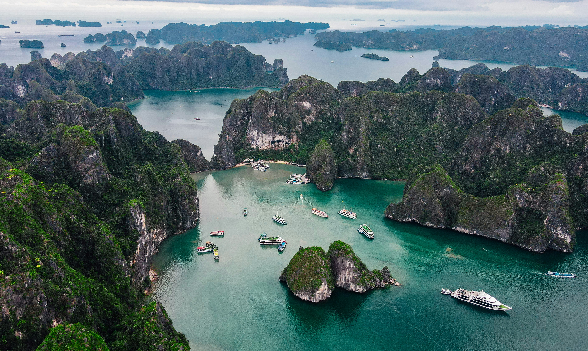
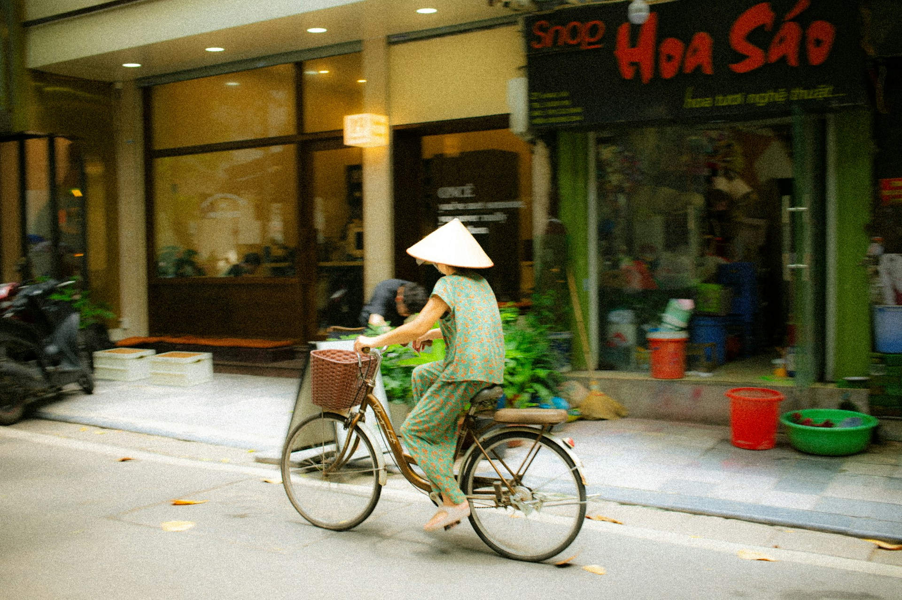
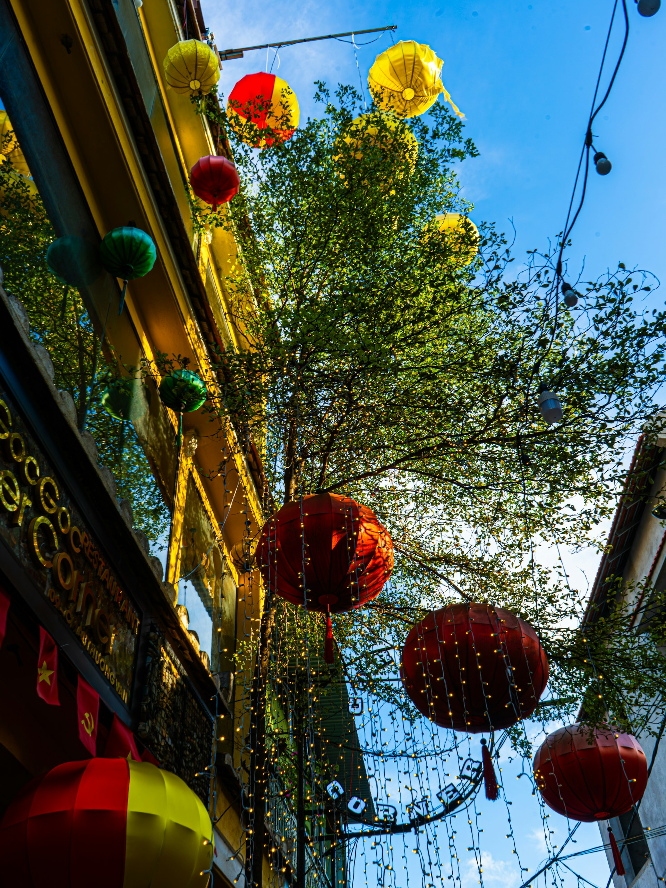
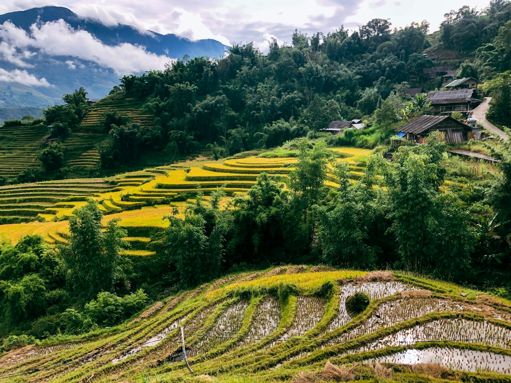
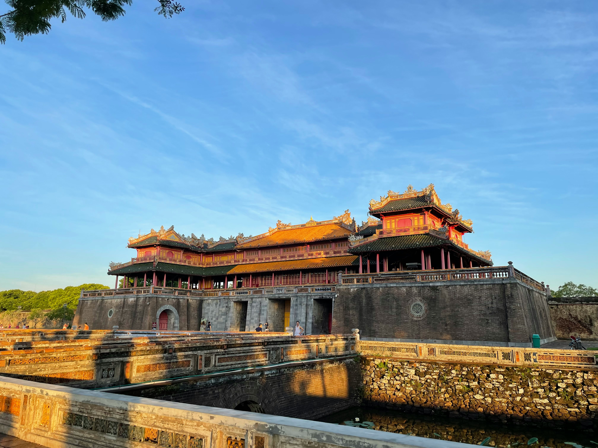
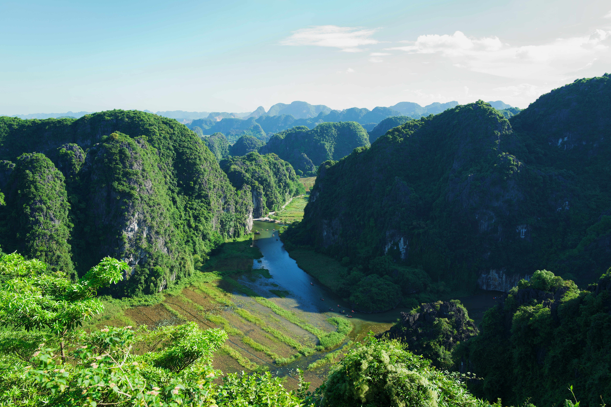
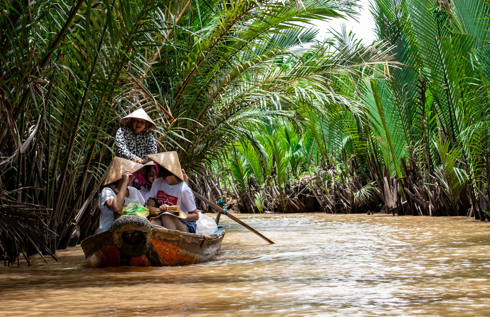
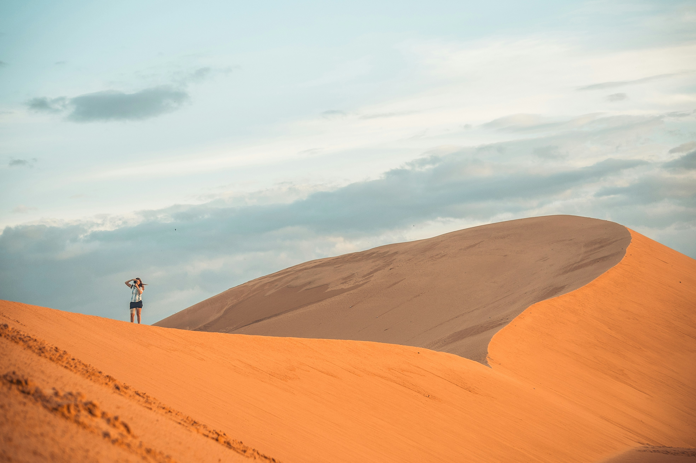
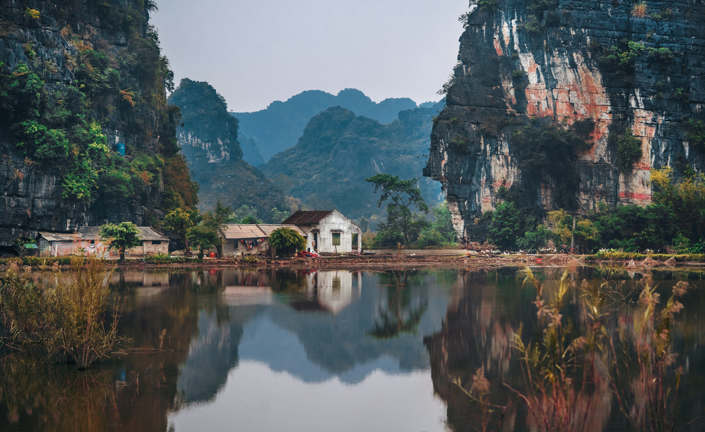

Vietnam in beelden
Van indrukwekkende berglandschappen en tropische stranden tot historische steden. Ontdek twaalf bijzondere bestemmingen die Vietnam zo uniek maken.
Twaalf bestemmingen in Vietnam









